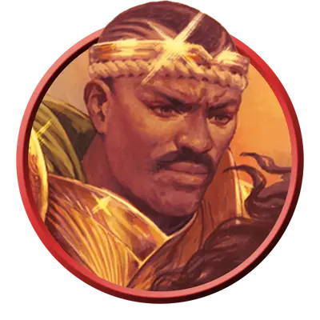

Странствующий рыцарь
Questing Knight
Средний или Маленький Гуманоид, Нейтральный

Класс Защиты 18 Инициатива +7 (17)
Хиты 202 (27к8 + 81)
Скорость 30 футов
| мод | спас | ||
|---|---|---|---|
| СИЛ | 20 | +5 | +9 |
| ЛОВ | 16 | +3 | +3 |
| ТЕЛ | 16 | +3 | +7 |
| мод | спас | ||
|---|---|---|---|
| ИНТ | 11 | +0 | +0 |
| МДР | 12 | +1 | +5 |
| ХАР | 18 | +4 | +8 |
Иммунитеты Испуганный, Очарованный
Чувства пассивное Восприятие 15
Языки Общий
Опасность 12 (8 400 опыта; БВ +4)
Особенности
Аура отваги. Существа по выбору рыцаря в 30-футовой Эманации, исходящей от него, обладают Иммунитетом к состояниям Испуганный и Очарованный, пока остаются в пределах Эманации.
Действия
Мультиатака. Рыцарь совершает три атаки Двуручным мечом или Длинным луком в любой комбинации.
Двуручный меч. Бросок рукопашной атаки: +9, досягаемость 5 фт. Попадание: 12 (2к6 + 5) Рубящего урона плюс 22 (5к8) урона Излучением.
Длинный лук. Бросок дальнобойной атаки: +7, дистанция 150/600 фт. Попадание: 12 (2к8 + 3) Колющего урона плюс 22 (5к8) урона Излучением.
Сотворение заклинаний. Рыцарь сотворяет одно из следующих заклинаний (заклинательная характеристика — Харизма, Сл спасброска заклинаний 16):
1/день каждое: Высшее восстановление, Дневной свет, Призрачный скакун, Рассеивание зла и добра
Бонус мастерства +4
Среда обитания Любая
Сокровища Личные, Оружейные
Рыцари
Несравненные бойцы и странствующие герои
Рыцари — это умелые воители, обученные ратному делу и закалённые в сражениях. Многие из них поступают на службу правителям земель, божествам или орденам, посвятившим себя какому-то высокому делу.
Странствующие рыцари пускаются в путь во имя некой цели: сразить злодея, одолеть чудовище, вернуть утраченный Артефакт или восстановить поруганную честь.